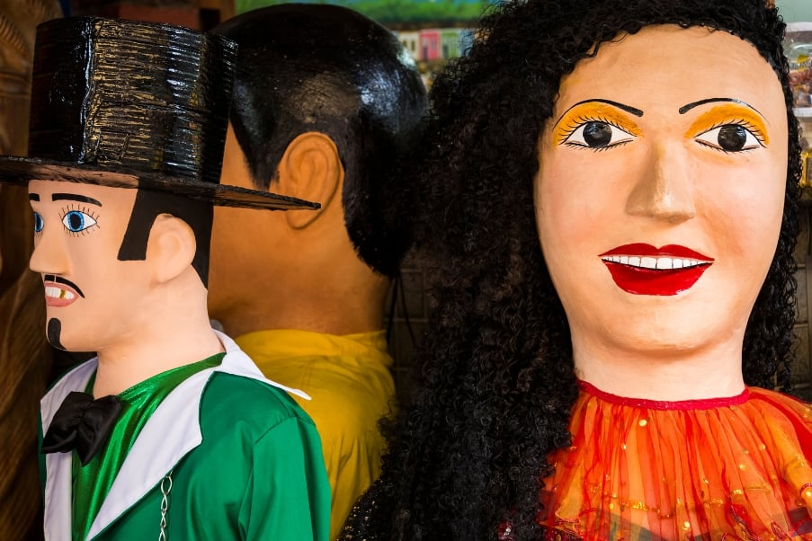

A Praia de Boa Viagem é um verdadeiro paraíso tropical em plena cidade. Com suas areias douradas e águas cristalinas, essa praia é um convite irresistível para relaxar e se refrescar. As famosas piscinas naturais formadas pelas recifes de coral são perfeitas para banhos tranquilos e observação marinha. Ao longo do calçadão, você encontrará uma variedade de quiosques, bares e restaurantes, onde pode desfrutar de delícias culinárias locais. A Praia de Boa Viagem é um destino imperdível que combina beleza natural com comodidades urbanas.
FREVO
O Frevo é uma dança pulsante que emana energia e alegria. Originário de Pernambuco, Brasil, esse ritmo contagiante é uma fusão de música, dança e cultura popular. Com seus passos ágeis, giros e acrobacias, o Frevo é uma celebração da criatividade e da tradição. Acompanhado por uma banda de metais enérgica, ele transporta os espectadores para uma festa contagiante, onde a música e o movimento se unem em uma explosão de cores e ritmos. O Frevo é uma manifestação cultural única que encapsula a paixão e a vitalidade do povo brasileiro.
BONECOS DE OLINDA

Os Bonecos de Olinda são personagens encantadores que ganham vida nas ruas dessa cidade histórica. Feitos à mão com maestria e criatividade, esses bonecos gigantes são verdadeiras obras de arte ambulantes. Com trajes coloridos, expressões caricatas e dimensões impressionantes, eles cativam todos os que os veem. Durante os famosos carnavais de Olinda, esses bonecos desfilam pelas ladeiras íngremes, adicionando um toque de magia e diversão à festa. Essas figuras folclóricas são um símbolo da cultura local, celebrando a alegria e o espírito festivo de Olinda de maneira única e memorável.
FORTE ORANGE
A Praia de Forte Orange é um refúgio paradisíaco que combina história e beleza natural de maneira única. Localizada em uma área costeira deslumbrante, essa praia oferece areias douradas e águas cristalinas, perfeitas para relaxar e nadar. O destaque dessa praia é o Forte Orange, uma fortaleza histórica que remonta aos tempos coloniais e que adiciona um toque de intriga e encanto ao cenário. Além de curtir o sol e o mar, os visitantes podem explorar a rica herança cultural da região e desfrutar de pratos deliciosos em restaurantes à beira-mar. A Praia de Forte Orange é um lugar onde a tranquilidade e a história se unem para criar uma experiência memorável à beira-mar.